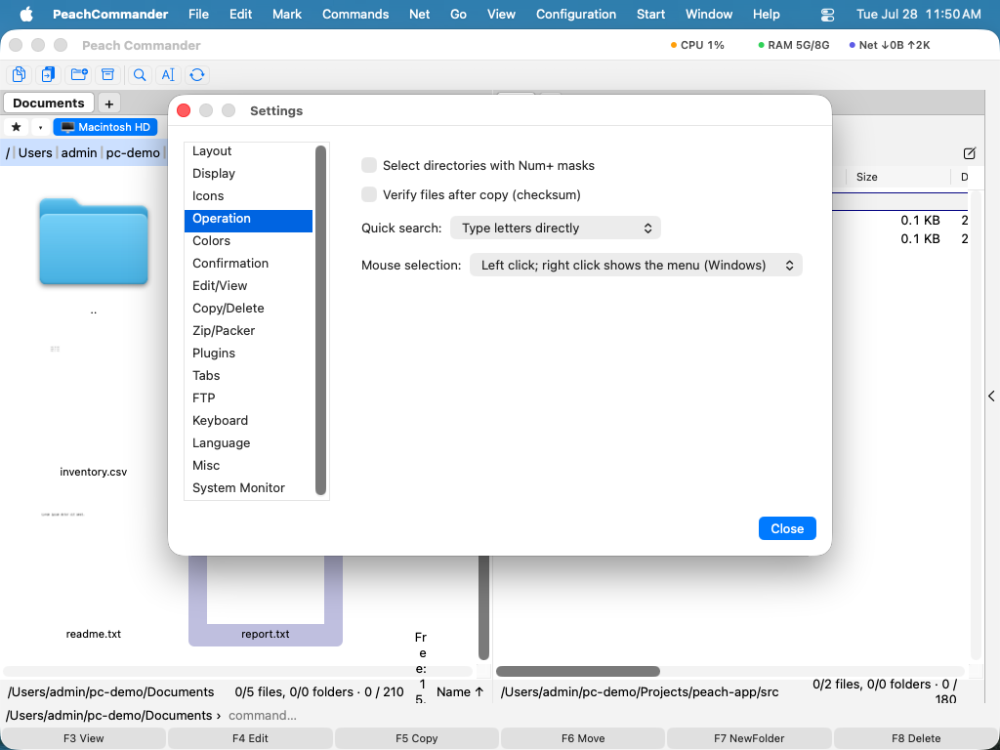

Nastavitve
Okno Nastavitve je mesto, kjer prilagodite Peach Commander načinu, kako delate: katere vrstice se pojavijo, kako so datoteke prikazane, kako se obnašajo operacije kopiranja in brisanja, oblika arhiva, uporabljena pri pakiranju, obnašanje zavihkov, privzete vrednosti FTP, jezik prikaza in več. Nastavitve so razvrščene v strani, tako da lahko hitro najdete možnost, vsaka sprememba pa se samodejno shrani v vašo osebno mapo konfiguracije.
Odpiranje Nastavitev
- Izberite Peach Commander > Nastavitve…, ali pritisnite Cmd+, (vejica).
- Isto okno lahko odprete tudi iz Konfiguracija > Možnosti….
- Izberite stran s seznama na levi; možnosti te strani se pojavijo na desni.
- Prilagodite gumbe. Spremembe začnejo veljati takoj, razen če opomba na strani pravi drugače.
- Če želite neposredno do možnosti, vnesite besedilo v iskalno polje na vrhu okna. Ustrezne nastavitve z vseh strani so navedene skupaj s stranjo, na kateri so, izbira pa odpre to stran z označeno nastavitvijo. ↑/↓ se premikata po rezultatih, Return odpre označenega, Esc pa zapusti iskanje in vrne stran, s katere ste prišli.
 (Slika: stran Postavitev nadzira, katere vrstice so prikazane okoli podoken.)
(Slika: stran Postavitev nadzira, katere vrstice so prikazane okoli podoken.)
Strani
Okno ima te strani, po vrsti:
- Postavitev — prikaži ali skrij vrstico diskov, vrstico zavihkov, vrstico poti in vrstico stanja.
- Prikaz — kako so našteti datoteke in mape, vključno z obliko datuma.
- Ikone — videz ikon v seznamih datotek.
- Delovanje — splošno obnašanje, na primer kaj se zgodi, ko tipkate v podoknu (hitro iskanje proti ukazni vrstici).
- Barve — poljubne barve podoken, ali jih pustite slediti trenutni temi.
- Potrditev — katera dejanja najprej prosijo za potrditev, kot je brisanje.
- Uredi/Poglej — ali shranjevanje v urejevalniku ohrani varnostno kopijo
.bak, programi, uporabljeni za urejanje in pregledovanje datotek, in povezave po vrsti. - Kopiranje/Brisanje — ohrani metapodatke datotek, uporabi hitro kloniranje, kopiraj le novejše datoteke, preveri po kopiranju, pošlji brisanja v Koš in nastavi izbirno omejitev hitrosti.
- Zip/Pakirnik — privzeta oblika arhiva in raven stiskanja, uporabljena pri pakiranju.
- Vtičniki — vklopi ali izklopi nameščene vtičnike.
- Zavihki — kako se zavihki map odpirajo in obnašajo.
- FTP — omrežne privzete vrednosti, kot je interval keep-alive.
- Tipkovnica — preglej in spremeni tipkovne bližnjice.
- Jezik — izberi Sistemsko privzeto, English ali Deutsch.
- UI — nastavi pomočnika UI: prednostni model, končno točko in ključ oblaka, avtonomijo in izbirni strežnik MCP (glejte Pomočnik UI).
- Razno — odpri svojo mapo konfiguracije v Finderju.
Omogočeni vtičniki lahko dodajo svoje strani za vgrajenimi — na primer Zemljevid diska in System Monitor — tako da njihove možnosti živijo v istem oknu (glejte Vtičniki).
 (Slika: stran Prikaz nadzira, kako so našteti datoteke in mape.)
(Slika: stran Prikaz nadzira, kako so našteti datoteke in mape.)

(Slika: stran Delovanje ureja hitro iskanje in obnašanje miške.)Kje so shranjene vaše nastavitve
Vaša konfiguracija je hranjena v datotekah navadnega besedila znotraj vaše osebne mape Application Support, na ~/Library/Application Support/PeachCommander. Za odpiranje pojdite na stran Razno in kliknite Odpri mapo konfiguracije. Shranjena gesla FTP niso shranjena v teh datotekah; varno so hranjena v ključavnici macOS.
Nastavitve se zapisujejo, ko jih spreminjate. Shranjevanje lahko tudi vsililite kadar koli z Konfiguracija > Shrani nastavitve ter shranite trenutni položaj okna in postavitev podoken z Konfiguracija > Shrani položaj.
Prenos nastavitev iz Total Commander
Če prehajate s Total Commander v sistemu Windows, lahko uvozite svoja shranjena mesta FTP. Izberite Konfiguracija > Uvozi wincmd.ini… in izberite svojo konfiguracijsko datoteko FTP iz Total Commander. Vaše povezave se dodajo v Peach Commander v istem vrstnem redu, kot so se pojavile tam.
Bližnjice
| Dejanje | Bližnjica |
|---|---|
| Odpri Nastavitve | Cmd+, |
Opombe
- Stran Jezik ponuja Sistemsko privzeto, English in Deutsch. Sprememba jezika začne veljati šele po ponovnem zagonu Peach Commander.
- Barve, nastavljene na strani Barve, preglasijo temo; tam uporabite Ponastavi na privzeto, da se vrnete na barve teme.
- Peach Commander hrani svoje nastavitve le v lastni mapi konfiguracije, tako da vaše spremembe nikoli ne vplivajo na druge aplikacije in jih je enostavno varnostno kopirati s kopiranjem te mape.